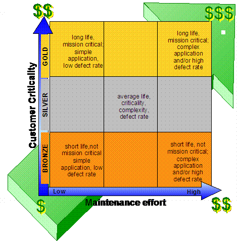

Purpose
Use this guideline to:
-
Craft and price a client deal that includes a Fixed Price Maintenance component
-
Manage Fixed Price Maintenance projects
Scope
This guideline applies to:
Defect Repair or Production Support services only, although those working on other types of fixed price efforts may
also benefit from reading it.
Note: Application enhancements and application development are never included under Fixed Price Maintenance.
Overview
Fixed Price projects are subject to appropriate levels of project management. This document is intended to
provide advice and guidance to practitioners on what procedures or practices may differ in some respect for a Fixed
Price Maintenance effort.
This guideline includes:
Engagement Guidelines, which explain what Fixed Price Maintenance means, and provide details of the
basic pricing process used. The target audience is the engagement team responsible for crafting the client
deal.
Delivery Guidelines, which cover guidance for delivery teams, to help ensure the business objectives
of the contract are met.
For additional information on defining Fixed Price Maintenance and for the rationale for offering a fixed price
maintenance delivery option, refer to the Appendices section.
Details
1. Engagement guideline details
In the engagement phase, IBM and the client agree on the scope of services including requirements, the application
portfolio to be maintained, and the general activities that will be performed during delivery to provide the
agreed-upon services.
The topics in this section include:
-
Qualifying the Deal
-
Establishing the Pricing Methodology
-
Partitioning the Portfolio
-
Assigning the Valuation Factors
-
Pricing the Portfolio
-
Managing Changes in the Portfolio
-
Evaluating the Price as the Contract Proceeds
1.1 Qualifying the deal
Before proposing a fixed price maintenance option, the engagement team needs to review the characteristics that make a
deal a candidate for this delivery option:
-
"Break-fix" and production support maintenance only
Is the client looking for the kind of services that we group under fixed price maintenance?
-
Clear requirements with baseline
Do we understand the client requirements and the maintenance platform from which we are starting? Fixed
price works best when we know the current level of effort and cost to maintain the client's application portfolio.
-
Stringent change management
Will we be able to manage change requests (both to the portfolio and at the application level) with the degree of
rigor required to make a fixed price agreement viable? If not, it may be best to propose a time and materials
contract.
-
High comfort level with estimates
Are we confident that the estimates for the maintenance work are reasonably accurate? If not, we may want to
propose an initial phase that uses a bounded fixed price or time and materials to build a baseline for the fixed
price phase.
-
Good risk assessment with complete mitigation/containment plans as part of Fixed Price Maintenance estimate
Since IBM assumes much of the risk with a fixed price agreement, it is important that we include strong risk
management in our project planning. The GS Risk tool provides guidance that we need (and EMEA experience has
shown that it adequately covers fixed price maintenance contracts).
-
Level of client AD/M sophistication is known and appropriate
Fixed price maintenance contracts can be attractive where there is significant opportunity to increase the maturity
of the application maintenance processes as we assume responsibility for maintenance of the client's application
portfolio. Thus, clients at SEI CMM levels 1 or 2 are good candidates for Fixed Price Maintenance contracts.
-
Critical mass achieved (approximately 20 headcount)
To enable the resource sharing and other economies of scale that make fixed price maintenance a win-win option, the
contract has to be large enough. An estimated work effort requiring fewer than 20 headcount is probably too
small.
1.2 Establishing the pricing methodology
If, following qualification, Fixed Price Maintenance is an attractive pricing option for the deal, the engagement team
needs to determine the pricing parameters. The methodology described in this section uses input from the client and
from IBM to categorize applications into nine major groups. Different pricing factors are applied to each group to
determine the overall fixed price.
1.2.1 Costing the solution and pricing the deal
Before a fixed price can be determined, the cost of the solution is determined. The same tools and methods are used to
cost a fixed price maintenance contract and a time and materials maintenance contract, since the amount of work that
needs to be done is the same.
Different service levels may be associated with each of the nine different application groups, and this may affect the
cost to deliver the solution. Where the solution lends itself to shared services, we can factor this in to the cost as
well.
The cost to IBM to deliver the required services becomes a key input to the pricing model.
1.2.2 Pricing model
The pricing model uses a two-dimensional view of the application portfolio to partition it into nine application
groups.
Based on the characteristics of the group, each of the nine application groups is assigned a valuation factor that is
used in setting the price. The greater the strategic importance, the complexity, or the defect rate, the greater
the valuation factor, as these characteristics translate directly into work effort and business value of the services
provided.
Groups may also have different service levels associated, affecting both pricing and delivery. As needed,
applications within each group can be further broken down into logical subgroups, for example, by source language,
platform or business process. It is very likely that subgroups will be used when determining how and by whom
services will be delivered.
The following is a pictorial view of the pricing model. The Y-axis (?) depicts the client view of the application
value to the business; the X-axis (?) depicts the IBM view of the application maintenance profile. Relative
pricing values increase along each axis, and the application group in the upper right hand corner will typically have
the highest pricing factor, while the application group in the lower left corner will typically have the lowest pricing
factor.

1.3 Partitioning the portfolio
The client classifies the applications in the portfolio according to their strategic importance, assigning each to one
of three categories. For ease of reference, we label these categories Gold, Silver and Bronze.
Gold: The application is considered mission-critical, of strategic importance, and most likely expected to be
around for some time.
Silver: The application is of average importance to the business and provides significant business value.
Bronze: The application is low-value, non-strategic, or an about-to-be sunset tool.
The IBM team, with input from the client, classifies each application according to the expected maintenance effort
required. Again, there are three categories: Low, Medium, and High.
Low: The application is relatively simple with a low known or expected defect rate.
Medium: The application is of average complexity and has a low to moderate defect rate.
High: The application is highly complex and/or exhibits a high defect rate.
After all applications have been categorized, they are collected into nine groups (Gold-High, Gold-Medium, Gold-Low,
Silver-High, Silver-Medium, Silver-Low, Bronze-High, Bronze-Medium, Bronze-Low) based on the values assigned. For
some clients, there will be applications in all nine groups; for others, the applications may cluster into one or two
groups.
1.4 Assigning the valuation factors
For fixed price maintenance, different valuation factors are assigned for each of the nine groups, as each group has a
different risk associated with it. IBM teams involved in pricing and managing the portfolio should refer to their
complete pricing guidance.
1.5 Pricing the portfolio
IBM teams involved in pricing the portfolio should refer to their complete pricing guidance.
 Refer to the IBM Global Services Finance and Planning website for available Financial Analyst
Handbooks, to aid IBM Global Services Pricers in fulfilling their responsibilities (preliminary registration and
intranet password may be required). Refer to the IBM Global Services Finance and Planning website for available Financial Analyst
Handbooks, to aid IBM Global Services Pricers in fulfilling their responsibilities (preliminary registration and
intranet password may be required).
1.6 Managing changes in the portfolio
Typically, the application portfolio will change composition over time. The client will add applications, delete
applications and replace applications with newer versions. Any of these changes may require an adjustment to the
pricing.
If possible, define a fixed schedule for reviewing and updating the portfolio, for example, quarterly or semi-annual
updates with an annual portfolio rebalancing. This will allow changes to be collected and batched for analysis
and pricing, giving the maximum opportunity to provide a cost effective solution that brings value to the client and
IBM alike.
Determine whether the regular reviews will result in a rebalancing of the entire portfolio, or whether they will simply
cover additions and deletions to existing application groups. When the portfolio is rebalanced, the client and
IBM update the application classifications for all applications in the portfolio and a new fixed price is computed
across the entire portfolio. When the regular updates cover only application additions, deletions, or minor
enhancements, there is no rebalancing; only the new applications are classified and the price is simply adjusted based
on the added or removed applications.
1.6.1 Adding or removing application groups
If the original classification of the application portfolio resulted in a need for fewer than nine application groups,
some groups may be empty. There is then no cost or price associated with the empty groups. There is no need to add or
remove application groups. On the other hand, each group may be subdivided into two or more subgroups for ease of
associating the applications with the delivery plan.
1.6.2 Updating application groups
It is a relatively straightforward procedure to update the application groups when the client adjusts the portfolio for
which we are providing fixed price maintenance services.
-
Adding applications to a group
When an application is added to a group, the price is recalculated to include the application.
-
Deleting applications from a group
When an application is deleted from a group, the price is recalculated.
-
Replacing applications in a group
There needs to be a clear understanding between IBM and the client as to what constitutes a major new release, and
what is merely a minor application enhancement. Typically, minor application enhancements do not result in a
change in the maintenance price; major new releases may result in a price adjustment.
If a major new release is implemented, the application will be reclassified. In many cases, the maintenance
effort will be judged to increase, as new releases tend to have more defects than stable, mature releases.
New releases often add significant function, also increasing the amount of maintenance effort required.
Sometimes, however, new releases improve the maintainability of the application and reduce the required maintenance
effort.
-
Moving applications from one group to another
When an application is reclassified into another group, then the prices for the source and target application
groups must be recalculated.
1.7 Evaluating the price as the contract proceeds
It is important to review the accuracy of the pricing as the deal is executed over time to ensure IBM is achieving the
profitability goals it set. A "lessons learned" exercise at regular intervals should focus on the parameters you
selected to learn which worked well and which require refinement. In particular, did you capture costs realistically
and did you identify appropriate categories for the applications in the portfolio?
2. Delivery guideline details
Once the contract has been signed, it is time for Delivery to begin providing fixed price maintenance services.
There are some best practices to follow when delivering services against a fixed price maintenance contract.
Where a best practice exists, it is summarized here or a reference is made to its full description elsewhere.
Rather than changing the way services are provided, special emphasis is put on certain areas, such as change control,
in order to meet the service level and profitability objectives of the contract.
Fixed Price Maintenance projects are subject to appropriate levels of project management. This document is
intended to provide advice and guidance to practitioners on what procedures or practices may differ in some respect for
a Fixed Price Maintenance effort, assuming that the reader is already familiar with standard delivery practices and
procedures.
Guidance to the Delivery teams during the Transition and Steady-State phases of the deal is provided for each of the
following activities:
-
Requirements Management
-
Service Levels
-
Problem Management
-
Portfolio Management
-
Project Management
-
Change Management
-
Estimating
2.1 Requirements management
2.1.1 Transition phase
-
IBM application support teams and business application support teams must have a common understanding of when a
defect will be investigated under Fixed Price Maintenance, for example, non-conformance to baseline requirements.
-
Baseline Requirements that clearly define how the application functions are essential. If these requirements do not
exist to the required level of detail, they must be created prior to commencing a Fixed Price Maintenance
agreement.
-
Baseline Interface Requirements that clearly define the functionality of data transfer between the two applications
are also essential. If these requirements do not exist to the required level of detail, they have to be
created prior to commencing a Fixed Price Maintenance agreement.
2.1.2 Steady-State phase
To determine whether a problem reported by the business is a defect that should be resolved under Fixed Price
Maintenance, compare the Baseline Requirements against how the application is functioning.
-
If there is a discrepancy between the way the application is functioning and the baseline requirements, then the
problem is a defect and should be resolved under Fixed Price Maintenance.
-
If the application were functioning as defined in the baseline requirements, then the problem would need to be
fixed as part of an enhancement and the appropriate baseline requirements updated.
-
No updates would be expected to the baseline requirements documentation for Fixed Price Maintenance activity except
to provide an increased level of clarity.
-
Ongoing education on how to handle suspected requirement defects will be required as new personnel are assigned to
the application support team.
Refer to the Requirements Management Procedure (IMSP575) and the Requirements Development and
Management Procedure (IMSP576) for additional information on requirements.
2.2 Service levels
2.2.1 Transition phase
-
Know what service levels exist as part of the contract:
-
Know if any of the service levels have financial penalties associated with them.
-
Know if there are any performance requirements of the application.
-
Understand the application support personnel coverage. If coverage is less than one FTE, the
appropriate prioritization and resource availability must be in place. Otherwise, challenges may
arise when trying to meet service levels.
-
Establish measurements of how the application support is performing against all service levels.
-
Manage to the committed service levels:
-
Prior to commencing a Fixed Price Maintenance contract, identify activities that need to be performed in
order to meet the agreed service levels.
-
Know if relief is needed from one or more of the service levels for a specified time period.
-
Educate the application support team in the service level details
2.2.2 Steady-State phase
-
Manage the metrics which affect the service level:
-
Processes must be defined and followed to reduce the risk of failing to meet a service level target.
-
Priority is given to defects that will affect the service level target.
-
Ongoing education is given to the IBM application support team on the service levels and processes to
maximize success in meeting service level targets.
2.3 Problem management
2.3.1 Transition phase
-
Define the Problem Management Process. An application management plan signed by the client may be used for
this. It should cover:
-
How the severity of problems is assigned.
-
What tool is used to manage problems.
-
What level of detail needs to be entered into the tool.
-
IBM's responsibility for proactively monitoring the queue for new problems.
-
The client's responsibilities in the process and identification of the main contacts. The boundaries
between the client and application support team need to be clearly defined.
-
The interface responsibilities in the process and identification of the main contacts.
-
The system software responsibilities in the process and identification of the main contacts.
-
How the different support groups engage in resolving a problem.
-
Education must be provided to the IBM and business application support team on the problem management process and
tool.
2.3.2 Steady-State phase
-
Refine the Problem Management Process and application management plan as required. This should be required
infrequently.
-
Ensure adherence to the application management plan and Problem Management Process.
Refer to the Problem Management Procedure (IMSP560) for additional information on problem
management.
2.4 Portfolio management
2.4.1 Transition phase
-
When requests for a change to the Fixed Price Maintenance Portfolio (add an application, major update to an
existing application, delete an application) are received, review the 'Managing changes in the portfolio' section
of this document for details on how to modify the Fixed Price Maintenance Portfolio.
-
Project Managers are assigned an application or a group of applications to support under Fixed Price Maintenance.
-
Education must be provided to the Project Manager and the application support team on the application
functionality, business contacts and service levels.
2.4.2 Steady-State phase
-
Project Managers manage their assigned portfolio(s) of applications to meet service levels and client expectations
(see details in Change management section below).
2.5 Project management
2.5.1 Transition phase
-
Review requirements, service levels, and the problem management process with the client.
-
All members of the application support team and the client business team must understand the definition of
a defect that would be fixed under Fixed Price Maintenance.
-
Identify those responsible for approving changes, and their responsibilities (see details in Change
management section below).
-
Identify the level of reporting that is required, taking care to balance providing too low level of granularity of
data against providing sufficient visibility to the services we are providing:
-
Track performance against service levels
-
Number of problems outstanding and raised - depends on the client's visibility to the problem management
tool
-
Cost, if required (not normally provided for Fixed Price Maintenance efforts)
-
Ensure that processes are in place to capture and manage service level measurements, in particular, those that have
financial penalties associated with them.
2.5.2 Steady-State phase
-
Work with the client to determine whether business problems are conforming to baseline requirements or are defects
that should be fixed under Fixed Price Maintenance. This must be understood at all levels of the application
support team and the client business team.
-
Ensure that business problems that are not defects are promptly transferred through the appropriate process
channel to the proper application support group for handling.
-
Provide the client with an appropriate level of visibility into the services provided.
-
With a fixed price contract, IBM is responsible for managing how the maintenance activity occurs. The
client should only be interested in whether we meet the agreed upon service levels, not how we achieve
them.
-
Manage to the service level measurements.
-
Give priority to problems that affect service levels with financial penalties
-
Manage measures that affect service level agreements, for example, defects recorded at the correct severity
level
-
Manage the number of maintenance releases planned
-
Maintenance items can be deployed with enhancement application releases to reduce costs
-
Maintenance items packaged into a maintenance release will reduce costs
-
Emergency maintenance releases need to be considered for high severity defects
2.6 Change management (Configuration management)
2.6.1 Transition phase
-
Establish a review board that includes both application team and business team representatives. This review board
may only require one representative from IBM, which would normally be the Project Manager, and one from the
business. The responsibilities of this review board would be to:
-
Oversee maintenance activity performed:
-
Ensure that problems raised are defects that are covered under Fixed Price Maintenance (see
Requirements Management section of this document).
-
Ensure that the high priority defects from IBM's and the business perspective are being addressed
appropriately.
-
If Preventive maintenance is part of the service, determine how to report activities to the client.
-
Change Management covers the processes and authorization to implement maintenance releases into production.
It also:
-
Ensures that the processes are different for a maintenance release than for an enhancement release.
-
Determines how interface applications are engaged in maintenance activity by identifying the process for
engaging an interfacing application in Fixed Price Maintenance activity, and how the activity is funded.
2.6.2 Steady-State phase
-
Hold regular meetings of the review board to discuss maintenance activity and to provide the client with an
appropriate level of visibility into the services provided.
-
Prioritize defects to be investigated and fixed
-
IBM must ensure that defects affecting service level measurements are addressed as a priority
-
Raise issues relating to the non conformance to processes
Refer to the Configuration Management Procedure (IMSP585) for additional information on introducing
change to the production environment.
2.7 Estimating
2.7.1 Transition phase
-
Adding a new application into the portfolio:
-
See the 'Managing changes in the portfolio' section of this document, for the processes to follow.
-
Consider what additional activities need to be performed and what savings can be realized through existing
application support processes.
2.7.2 Steady-State phase
-
If there are Fixed Price Maintenance cost changes from one year to the next, they need to be tracked and estimated
throughout the year. These may include:
-
Changes to cost that may be instigated by IBM, such as increases to Fixed Price Maintenance costs due to a
significant increase in the applications' functionality or size due to enhancement releases.
-
Changes that may be instigated by the client. These may include a decrease to Fixed Price Maintenance costs
over time due to increasing stability of the application.
Refer to the Estimating Procedure (IMSP380) for additional information on estimating.
Work Products
-
Application Management Plan (ENG 408)
Appendices
Appendix A. Defining Fixed Price Maintenance
The application management services that are typically covered under the Fixed Price Maintenance pricing option include
defect repair or break-fix services, and production support or maintenance services for ongoing support.
Break-fix or defect repair
Application maintenance for break-fix activity is defined as the minimum activity required to keep an application
running in its current functional scope. It includes actions taken to identify and repair application defects
and failures when applications fail to conform to specifications for the application's software.
Note that the level of work associated with defect repair will be dependent on the classification of the application,
as described under the 'Establishing the pricing methodology' section of this document.
Production support or maintenance for ongoing support
Application maintenance for ongoing or production support comprises the day-to-day activities needed to support a
system or client. The support provided does not necessitate any correction or modification to application
software.
Production support activities that can be included in the scope of the fixed price maintenance pricing option are those
that exhibit predictable workloads and bounded scope.
The following table summarizes activities normally included in Production Support. The table is grouped into
three sections:
-
Usually suitable for fixed price
-
Sometimes suitable for fixed price
-
Typically not suitable for fixed price
|
Activity
|
Description
|
Include as fixed price?
|
|
Disaster Recovery (DR) support
|
Maintain application DR test plans and perform application testing to support annual DR test on designated
mainframe and midrange applications.
|
Usually
|
|
Release management
|
Performance of tasks documented in the release management procedure for changes created by the production
support staff.
|
Usually
|
|
Quality assurance
|
Performance of tasks documented in the software quality assurance procedure for activities performed by the
production support staff.
|
Usually
|
|
Problem management
|
Performance of tasks documented in the problem management procedure for production problems.
|
Usually
|
|
Portfolio management
|
Manage the production support staff, track and report production support metrics.
|
Usually
|
|
Corrective maintenance
|
Correct production problems that require application or operational modification. This activity includes
vendor fixes and error corrections from system log files. This activity does not include version or release
upgrades for third-party vendor applications.
|
Usually
|
|
Configuration management
|
Performance of tasks documented in the software configuration management procedure for changes created by
the production support staff.
|
Usually
|
|
Testing
|
Test changes developed by the production support team prior to migrating the changes to the production
environment.
|
Sometimes
|
|
Table maintenance
|
Add, change or remove production table values and perform seasonal rate changes.
|
Sometimes
|
|
Application database maintenance
|
Monitor production databases and production files, implement corrective actions and provide liaison with
database support and storage management.
|
Sometimes
|
|
Perfective maintenance
|
Application improvements (for example, documentation, code, process, job restructuring) initiated to
improve efficiency or minimize ongoing software maintenance requirements to minimize potential failures in
the future. Perfective maintenance is prioritized and, depending on scope, performed as production support,
enhancement or project.
|
Sometimes
|
|
Preventive maintenance
|
Correct production problems to prevent future application problems of a like or similar nature. Monitor
production batch cycle.
|
Sometimes
|
|
Change management
|
Performance of tasks documented in the change management procedure for changes created by the production
support staff.
|
Sometimes
|
|
On-call support
|
Production support provided after normal business hours.
|
Sometimes
|
|
Manual data updates
|
Correct production application data through the use of tools such as FILEAID and EXE.
|
Sometimes
|
|
Year end processing
|
Perform year-end processing for specified applications.
|
Sometimes
|
|
Problem determination / RCA
|
Analyze production problems to determine the root cause of failure and determine the impact to service
delivery.
|
Typically no
|
|
Minor enhancements
|
As resource capacity allows, develop application modifications that are outside the application design. A
minor enhancement is one that takes less than 20 hours to implement.
|
Typically no
|
|
End user support
|
Respond to end user problem tickets that are "how-to" in nature.
|
Typically no
|
|
Test/training region support
|
Maintain regions / environments needed to support the construction, test and promotion of production
support changes to the production environment. Maintain training regions / environments utilized by end
users.
|
Typically no
|
Applications
An application is within the scope of the Fixed Price Maintenance agreement if it is listed in the portfolio of
applications agreed to by IBM and the client.
Enhancements or development are NOT included
The activities included under fixed price maintenance should never include application enhancements or application
development, whether small or large.
Appendix B. Rationale for offering a fixed price maintenance delivery option
Analysts note that fixed price contracts are the better option because they enable providers to capture value that
their clients cannot. Value is captured by carefully defining how much of the client's process they will manage, by
using fixed price contracts where possible, and by minimizing the amount of customization they do. When successful,
providers realize both economies of scale and economies of skill, using innovations developed while serving one client
in a codified, repeatable way for other client.
Fixed Price Maintenance provides a value proposition that is attractive to both the client and the supplier of
services. For the client, fixed price offers predictable, guaranteed maintenance costs with good access to skills. In
addition, risk is shifted to the services supplier, as the supplier carries the cost of quality, pays if the defect
rate increases, and has an incentive to improve productivity, as greater productivity leads to a more profitable
contract. IBM offers fixed price because it allow us to manage a predictable workload across application groupings, to
use a shared resource model to gain efficiencies at non-peak times, and to have a potentially higher reward for a
potentially higher (but quite unlikely) risk.
|